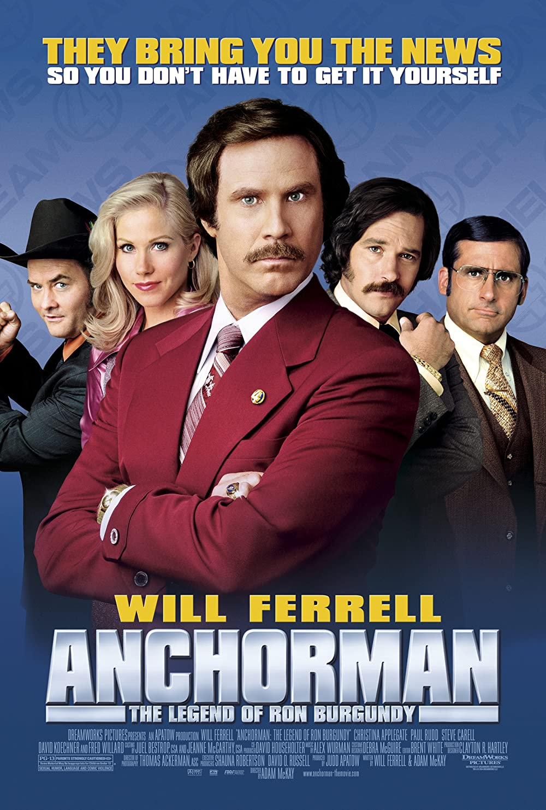

Anchorman: The Legend of Ron Burgundy

SINOPSIS
Ron Burgundy, un famoso presentador de noticias en la década de 1970, disfruta de su popularidad y estilo de vida glamoroso.
Sin embargo, su mundo se pone patas arriba cuando una mujer ambiciosa se une al equipo de noticias y amenaza con desafiar
su dominio como el principal presentador.